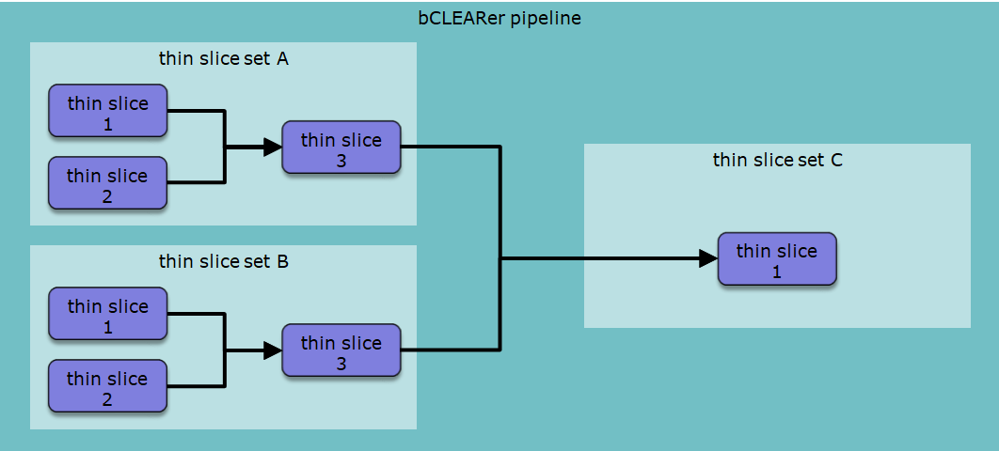
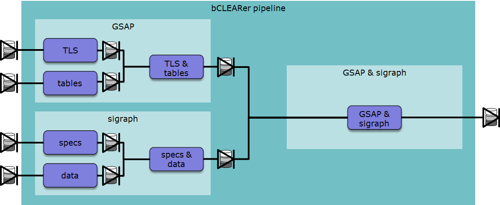
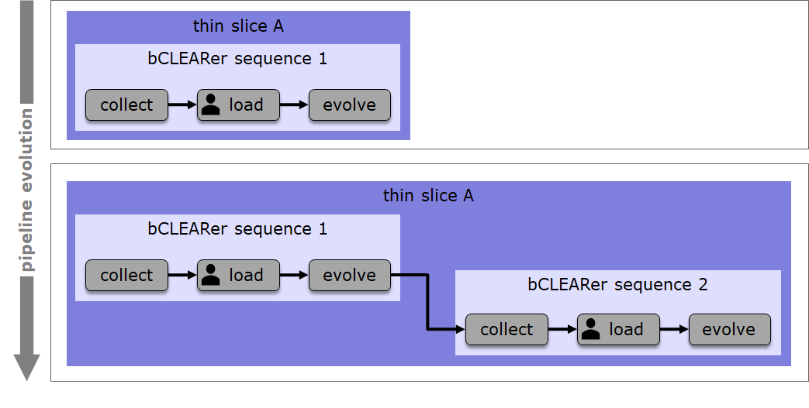

TtDT - Report - bCLEARer pipeline\'s three nesting levels
[]{#Bookmark37}
[Introduction]
In the previous section, we noted that bCLEARer pipelines are typically quite large and could benefit from a hierarchical, nesting structure. In this section we look in more detail at the levels of this nesting structure. This is an essential part of the stable bCLEARer infrastructure, the environment, within which the transformations evolve. The bCLEARer pipeline's primary nesting is based upon three broad levels (shown below). Within each level there may be further secondary nesting, allowing for as many levels of nesting as is useful at each level.
bCLEARer nesting decomposition levels
(Domain) thin slices the base unit of the breakdown of scope into domains bCLEARer stages the base unit of the stages of the bCLEARer digital journey bUnits the base unit of the bCLEARer pipeline architecture, composed of the bUnit filter and its associated bUnit pipes
source: bCLEARer nesting decomposition levels
Sometimes it is conceptually cleaner to describe the hierarchy from the bottom up starting from the base unit. In practice, the design often starts with the overall scope and decomposes this into base units. We follow this design practice [[in this section, where we ]{.inline-comment-marker ref="20adcad8-8c42-4024-a179-60e7c0b9feac"}]{.inline-comment-marker ref="8fd32520-c187-4a0f-8196-5042cb47accb"}[[[describe]{.inline-comment-marker ref="20adcad8-8c42-4024-a179-60e7c0b9feac"}]{.inline-comment-marker ref="8fd32520-c187-4a0f-8196-5042cb47accb"} ]{.inline-comment-marker ref="8f4845a7-911d-41fc-8bf3-5e73fb3c2fa9"}this nesting by level from the bCLEARer Pipeline down.
[]{#Bookmark38}
(Domain) thin slices
At the first, domain, level of decomposition the bCLEARer pipeline is decomposed into thin slices. The bCLEARer Pipeline can cover one [or ]{.inline-comment-marker ref="40632220-8c26-4577-9402-f15715db0ec4"}more domains. [With ]{.inline-comment-marker ref="8f0bf4c5-0519-4e73-afbc-4a3f3e0445ce"}any sizeable domain (or domains), it makes sense to divide this into sub-pipelines focussing [on ]{.inline-comment-marker ref="17c0cc03-fbf3-47c8-825b-db277a8ead5f"}smaller domain-based chunks . [Where there are [dependencies between the chunks, these need to be recognised in the bCLEARer pipeline flow]{.inline-comment-marker ref="80aabace-6636-4403-8f56-4abcc94ed6f3"}. ]{.inline-comment-marker ref="1b4dcd20-f0cb-4735-9e8d-264cb17f620e"}At the domain level, the base unit of chunking is the thin slice - this is where the domain decomposition stops. If it is useful, when the domain is large and will have a lot of thin slices, the decomposition can process in stage where the initial decompositions are into thin slice sets -- pipelines composed of thin slices.
[]{#Bookmark39}
Thin slice sets
When designing the nesting structure for the domain, it often makes sense to start with the overall bCLEARer pipeline and make a series of decompositions down until one reaches [the level of thin slices.]{.inline-comment-marker ref="242e707e-3506-4a03-a09d-2049307e7dfb"} Where these decompositions are driven by domain considerations. A pro-forma example of a first stage decomposition of a bCLEARer pipeline into thin slice sets (filters), [where the flow is ordered by pipes]{.inline-comment-marker ref="463a83ca-1409-4d85-8b93-6cba83a938ae"} is shown in the [figure ]{.inline-comment-marker ref="a059c787-5982-48b3-90a9-7f72e75cbbd3"}below.
[ {.confluence-embedded-image
.image-center width="340"
height="136"}]
{.confluence-embedded-image
.image-center width="340"
height="136"}]
[Gates ]{.inline-comment-marker ref="4fde5c9c-053c-475d-901c-49ff46428c22"}are placed at the start and end of each [thin slice]{.inline-comment-marker ref="5f557a75-6dd1-4802-a732-e6acaaf8a725"} set -- as shown in the [figure below]{.inline-comment-marker ref="c2d3b7ed-ad26-44ba-948d-902fd0643c8b"} using the dataset collection icon. This figure is based upon a real example, which involved two systems: GSAP and sigraph. The first two thin slice sets transformed the two systems in isolation and the third thin slice set merged and transformed the data from the two initial thin slice sets. Systems and their sub-systems often form natural boundaries for [thin slice sets]{.inline-comment-marker ref="a56aa8a6-b2c7-4cab-8238-060b5697acfa"}.
[ {.confluence-embedded-image
.image-center width="442"
height="149"}][]{#Bookmark40}
{.confluence-embedded-image
.image-center width="442"
height="149"}][]{#Bookmark40}
Thin slices
Each thin slice set is further broken down until the base-unit thin slices are reached. [The breakdowns are also ordered using pipes]{.inline-comment-marker ref="bbbfa209-b2bb-4f45-b840-03aa30a17623"}, as shown in the pro-forma nesting diagram in the figure [below]{.inline-comment-marker ref="cb38b01d-70df-4d7f-b79e-8962a9c15cfe"}.
[
Again, gates are placed at the start and end of each thin slice. This is shown in a real example in the nesting diagram in the [figure below. ]{.inline-comment-marker ref="7c0fc343-6206-414f-9489-779ef0c36ed7"}
[
This figure shows the merging of data within thin slice sets as well as across thin slice sets. This is not unusual, often a significant amount of the bCLEARer pipeline deals with the merging of data from different sources.
[]{#Bookmark41}
bCLEARer stages
At the next level of decomposition, the thin slice pipelines decompose into bCLEARer stages. These stages mark the stage of digital journey the data is on. Where there are many such stages, it can be useful to nest them into sub-pipelines. This is described below.
The need to mark the stage of digital journey the data is on leads to a major constraint upon bCLEARer stages -- they should flow in a sequence that reflects the journey. The sequence is well established (see first figure below).
[ {.confluence-embedded-image
.image-center width="624"
height="73"}]
{.confluence-embedded-image
.image-center width="624"
height="73"}]
The bCLEARer stages are gated -- as shown in the figure below.
[
There is significant scope for organising these stages into a series of sequences -- see example below, where one sequence follows another.
[
Also, the thin slice pipeline will typically evolve during a project -- as shown in the example below.
[
Sometime the pipeline involves manual work. As manual work interferes with running, scaling and costs, the aim is as far as possible to automate this work. Where it cannot be automated, it is often a good idea to restrict it to the Load stage, moving the manual work to the early stages in the sequence. In bCLEARer stage diagrams we usually mark the stages that involve manual work, using an icon -- this is visible in the Load stage in the diagram above. The manual icon is shown below.
[{.confluence-embedded-image .image-center}]{.confluence-embedded-file-wrapper .image-center-wrapper}[]{#Bookmark42}
bUnits
The bCLEARer stage pipelines decompose into bUnits -- [[the base unit of the bCLEARer pipeline, these are not decomposed any further]{.inline-comment-marker ref="af215268-4b89-4ce1-b17d-25503d67b835"}]{.inline-comment-marker ref="a49421b7-e1d8-4805-b4ba-d0d39a2085f5"}. As at the other levels, [these ]{.inline-comment-marker ref="90a90a80-3e66-4ce7-af2e-3a2c7c156fa7"}can be organised into secondary levels. The pipes in bUnits work at the finer-grained level of datasets rather than dataset collections. In diagrams, the bUnit pipes are adorned with the dataset icon, as shown below.
[
As the bCLEARer stages are gated, the bUnits need to be designed to accommodate the gates -- this is shown as start and end bUnits in the figure below, as are the finer-grained datasets.
[
Sometimes, unavoidably, a bUnit will be manual. This is marked using the manual icon -- there is an example of this in the diagram above.
[]{#Bookmark43}
bUnit - base unit for transformation, difference and identity
In the bUnit pipeline architecture, the bUnit pipes are the base units of identity and difference, and the bUnit filters the base units of transformation. In this architecture, the pipes transport data, the data is not transformed - so it is immutable stage of the data through the flow. The flow can then be seen as a sequence of bUnit immutable stages, where any transformation is located in the filters linking the stages.